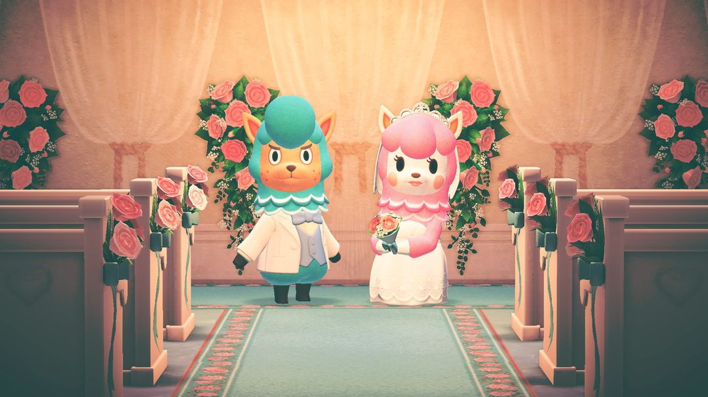
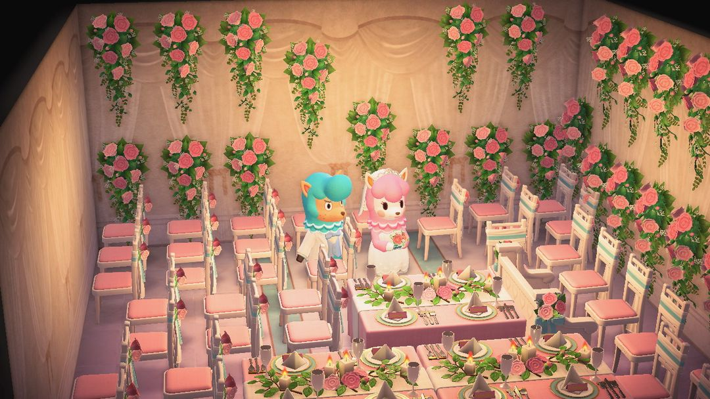

ジューンブライド：パニーの島でリサとカイゾーのウェディングフォトを撮ろう
6月中ずっと遊べるイベント。毎日1枚撮って、あいのけっしょうをためてウェディング家具と交換
6月のウェディングイベント「ジューンブライド」の主役は、リメイクのお店をやっているアルパカの夫婦、リサとカイゾーです。ふたりはパニエルの撮影スタジオで改めてウェディングフォトを撮りたいそうで、会場の飾りつけを手伝ってほしいと頼まれます。6月中は毎日1回撮影でき、撮るとウェディング家具と「あいのけっしょう」がもらえます。あいのけっしょうをためれば、カイゾーからさらにウェディング家具と交換できます。
急ぐ必要はありませんが、大事なのは続けること。ウェディング家具は7回撮影してはじめて全部解放され、あいのけっしょうで全部交換するには260個ほど必要です。1日1回、こつこつためていきましょう。6月中旬までに始めれば間に合いますが、早く始めるほど後が楽です。以下、イベントの始め方と毎日の撮影の流れ、それからけっしょうのお得な使い方を説明します。

飾りつけた式場と新郎新婦（画像：任天堂の公式画像、Nookipedia より）
01いつ、どこで
日付は固定です。毎年6月1日〜6月30日、一日中いつでも行けます。南半球も6月で、季節によって入れ替わることはなく、両半球とも同じ日に始まって同じ日に終わります。
| 半球 | 期間 |
| 北半球 | 毎年 6/1 – 6/30 |
| 南半球 | 毎年 6/1 – 6/30（入れ替わりなし） |
6月1日に家を出ると、パニエルから助けてほしいと電話がかかってきます。飛行場のモーリーに話しかけてパニーの島を選び、着いたら撮影スタジオの前でパニエル・リサ・カイゾーが話しこんでいるので、話しかけるとイベントが始まります。
02毎日の撮影の流れ
毎日の流れはほぼ同じなので、一度やれば覚えられます。
1. まずリサに話しかけると、その日に撮りたいシーンを教えてくれます。初日は結婚式のシーンで、白とピンクのもので飾りつけます。
2. 部屋に入って飾りつけます。置けるのはカイゾーが用意したウェディング家具で、自分の島から家具を持ってくる必要はありません。
3. 飾りつけが終わったら、カメラでふたりを撮影し、リサに見せます。
4. リサが気に入ってくれると、ウェディング家具1つとあいのけっしょうをいくつかもらえます。あいのけっしょうは取っておいて、カイゾーのところでほかのウェディング家具と交換しましょう。
撮影は1日1回で、お題は毎日変わります。ウェディング家具を多く、お題に合わせて置くほど、もらえるあいのけっしょうが増えます。少ないときは数個、多いときは十数個。適当に2つ3つ置いて終わりにせず、リサのお題に沿って会場をできるだけ埋めましょう。
6日目は特別で、披露宴です。この回は住民をゲストとして会場に呼べて、写真も撮らなくてOK。終わると「リサとカイゾーのえざら」がもらえます。
7回目の撮影の前にはパニエルから「ウェディングなさく」のDIYレシピを、7回目を撮り終えるとカイゾーから「ウェディングなステッキ」のDIYレシピをもらえます。残りのウェディング家具もすべて解放され、交換できるものが一気に増えます。

2020年6月に撮った披露宴：バラの壁、ピンクの椅子、長テーブル（画像：筆者のSwitchのスクリーンショット）
03あいのけっしょうで交換できるもの
ためたあいのけっしょうは、カイゾーのところで家具と交換します。カイゾーが売ってくれるのは1日8点までで、買ったものは翌日家に届きます。それぞれの値段（単位：あいのけっしょう）は次のとおりです。
| アイテム | 値段 |
| ウェディングなパイプオルガン | 40 |
| ウェディングなアーチ、じゅんぱくのドレス、じゅんぱくのタキシード | 各20 |
| じゅんぱくのヴェール、各色のウェディングなかべ・ゆか、ウェディングパーティーのかべ | 各12 |
| ウェディングなメインテーブル、ウェディングなテーブル、じゅんぱくのシューズ、じゅんぱくのパンプス | 各6 |
| ウェディングなベンチ、ウェディングケーキ、ウェディングなウェルカムボード | 各5 |
| ウェディングなキャンドル、ウェディングなフラワースタンド、ウェディングのラグ | 各4 |
| ウェディングなチェア、ウェディングなかべかざり | 各3 |
すべて1つずつ買うと、合計でおよそ260個必要です。カイゾーは1日8点しか売ってくれないので、けっしょうが一度にたまっていても買い終えるには何日かかかります。家具の交換を月末にまとめてやろうとしないようにしましょう。
ウェディング系のアイテムはカイゾーのところだけではありません。6月はエイブルシスターズに「しろむく」「つのかくし」「しろいもんつきはかま」が並び、たぬきショッピングにも「ウェディングベル」「ウェディングのドアプレート」「リングピロー」「フラワーシャワー」が登場します。自分の島で結婚式の飾りつけをしたいなら、ついでにそろえておきましょう。
04早くためるコツ
まずは安いものを交換して数を増やす。あいのけっしょうがいくつもらえるかは、会場に置いたウェディング家具の数で決まります。最初の数日はチェア、キャンドル、フラワースタンドのような3〜4個で買えるものから交換しましょう。会場を埋めるほど毎日もらえるけっしょうが増え、どんどんたまりやすくなります。
パイプオルガンとアーチは最後に。1つ40個と20個で、早く買うと何日分ものけっしょうを使ってしまううえ、小物をたくさん置くほど会場も埋まりません。安いものを全部そろえてから、この2つのためにまとめてためましょう。
あまり間をあけない。ウェディング家具は7回撮影してはじめて全部解放されます。6月24日より後に始めると、月末までに7回撮りきれません。早く始めておけば、途中で1〜2日抜けてもまだ間に合います。
ヒント7回目の撮影が終わると、ウェディング家具に色ちがいがいくつか増え、リサのお題でも色が指定されるようになります。指定された色の家具を選んで置くと、けっしょうを満額もらえます。
05アップデートでの変化
Ver.2.0からは、季節のイベントが毎年自動でやってくるようになり、任天堂のアップデートを待つ必要がなくなりました。
前の年にすでに「ウェディングなさく」「ウェディングなステッキ」のDIYレシピをもらっている場合、翌年はパニエルとカイゾーから代わりにあいのけっしょうを10個もらえます。
Ver.3.0の更新内容には、このイベントの変更についての記述はなく、遊び方は以前と同じです。
あつ森 サークル · App Store で「あつ森 サークル」を検索